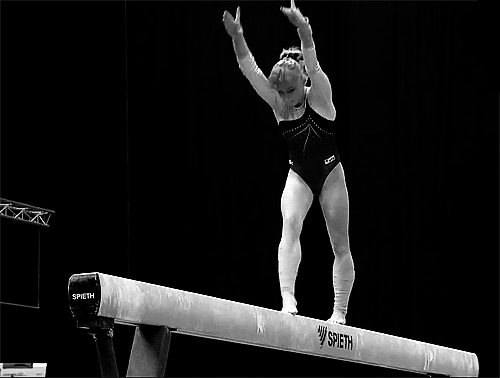

Ginástica Artística
A ginástica artística, ou ginástica olímpica, envolve diversos movimentos que exigem um grande domínio corporal. Quem pratica tal modalidade é chamado de ginasta.
Friedrich Ludwig Christoph Jahn
No início do século XIX, o pedagogo alemão Friedrich Ludwig Christoph Jahn (1778-1852) foi um dos responsáveis por transformar a ginástica artística em modalidade esportiva.
Ele é chamado por alguns de “pai da ginástica”, tendo um enorme espírito nacionalista; e depois de uma humilhante derrota de seus compatriotas perante Napoleão Bonaparte, decidiu restaurar o espírito alemão através do desenvolvimento físico e moral pela prática da ginástica. Visto que a prática era vista como perigosa, Jahn foi preso e houve a proibição da ginástica. Posteriormente adeptos desse esporte não permitiram sua extinção. Assim, alguns alemães levaram a modalidade para outras partes da Europa e do mundo. Em 1881 foi fundada a Federação Europeia de Ginástica, consolidando essa modalidade esportiva.
No que tange à categoria feminina, foi somente nas Olimpíadas de 1928 na Holanda que as mulheres passaram a competir. Hoje esse grupo tem grande representatividade no Brasil e no mundo.
Equipamentos
A ginástica artística possui diversos equipamentos, clique na imagem para alterá-la.
fixa